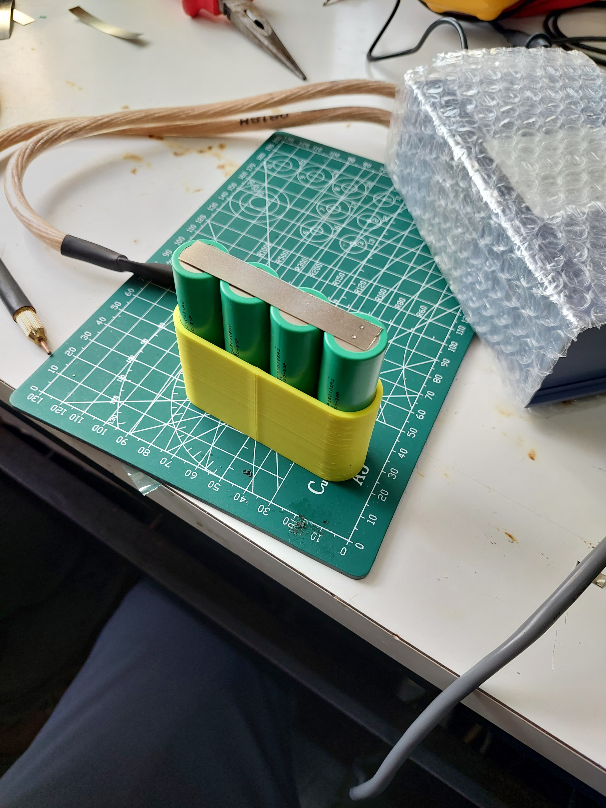
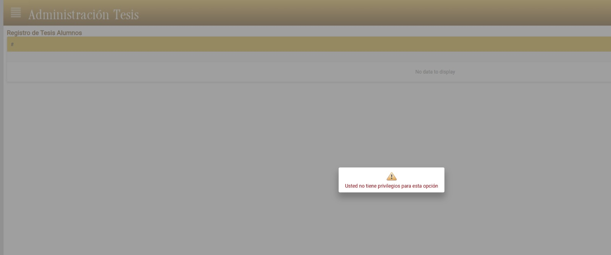

<!DOCTYPE html>
<html>
<head>
    
    <meta http-equiv="content-type" content="text/html; charset=UTF-8" />
    
        <script>
            L_NO_TOUCH = false;
            L_DISABLE_3D = false;
        </script>
    
    <style>html, body {width: 100%;height: 100%;margin: 0;padding: 0;}</style>
    <style>#map {position:absolute;top:0;bottom:0;right:0;left:0;}</style>
    <script src="https://cdn.jsdelivr.net/npm/leaflet@1.9.3/dist/leaflet.js"></script>
    <script src="https://code.jquery.com/jquery-1.12.4.min.js"></script>
    <script src="https://cdn.jsdelivr.net/npm/bootstrap@5.2.2/dist/js/bootstrap.bundle.min.js"></script>
    <script src="https://cdnjs.cloudflare.com/ajax/libs/Leaflet.awesome-markers/2.0.2/leaflet.awesome-markers.js"></script>
    <link rel="stylesheet" href="https://cdn.jsdelivr.net/npm/leaflet@1.9.3/dist/leaflet.css"/>
    <link rel="stylesheet" href="https://cdn.jsdelivr.net/npm/bootstrap@5.2.2/dist/css/bootstrap.min.css"/>
    <link rel="stylesheet" href="https://netdna.bootstrapcdn.com/bootstrap/3.0.0/css/bootstrap.min.css"/>
    <link rel="stylesheet" href="https://cdn.jsdelivr.net/npm/@fortawesome/fontawesome-free@6.2.0/css/all.min.css"/>
    <link rel="stylesheet" href="https://cdnjs.cloudflare.com/ajax/libs/Leaflet.awesome-markers/2.0.2/leaflet.awesome-markers.css"/>
    <link rel="stylesheet" href="https://cdn.jsdelivr.net/gh/python-visualization/folium/folium/templates/leaflet.awesome.rotate.min.css"/>
    
            <meta name="viewport" content="width=device-width,
                initial-scale=1.0, maximum-scale=1.0, user-scalable=no" />
            <style>
                #map_12c1663f0916b11fef7f2b00d802f6af {
                    position: relative;
                    width: 100.0%;
                    height: 100.0%;
                    left: 0.0%;
                    top: 0.0%;
                }
                .leaflet-container { font-size: 1rem; }
            </style>
        
    <script src="https://cdnjs.cloudflare.com/ajax/libs/leaflet.fullscreen/1.4.2/Control.FullScreen.min.js"></script>
    <link rel="stylesheet" href="https://cdnjs.cloudflare.com/ajax/libs/leaflet.fullscreen/1.4.2/Control.FullScreen.min.css"/>
    <script src="https://cdnjs.cloudflare.com/ajax/libs/leaflet.draw/1.0.2/leaflet.draw.js"></script>
    <link rel="stylesheet" href="https://cdnjs.cloudflare.com/ajax/libs/leaflet.draw/1.0.2/leaflet.draw.css"/>
    <script src="https://cdn.jsdelivr.net/gh/ljagis/leaflet-measure@2.1.7/dist/leaflet-measure.min.js"></script>
    <link rel="stylesheet" href="https://cdn.jsdelivr.net/gh/ljagis/leaflet-measure@2.1.7/dist/leaflet-measure.min.css"/>
    <script src="https://unpkg.com/leaflet-control-geocoder/dist/Control.Geocoder.js"></script>
    <link rel="stylesheet" href="https://unpkg.com/leaflet-control-geocoder/dist/Control.Geocoder.css"/>
</head>
<body>
    
    
            <div class="folium-map" id="map_12c1663f0916b11fef7f2b00d802f6af" ></div>
        
</body>
<script>
    
    
            var map_12c1663f0916b11fef7f2b00d802f6af = L.map(
                "map_12c1663f0916b11fef7f2b00d802f6af",
                {
                    center: [-39.82, -73.25],
                    crs: L.CRS.EPSG3857,
                    zoom: 11,
                    zoomControl: true,
                    preferCanvas: false,
                    drawExport: false,
                    layersControl: true,
                }
            );
            L.control.scale().addTo(map_12c1663f0916b11fef7f2b00d802f6af);

            

        
    
            var tile_layer_53ca1594f1c495738f5f85a02f1fe893 = L.tileLayer(
                "https://{s}.tile.openstreetmap.org/{z}/{x}/{y}.png",
                {"attribution": "Data by \u0026copy; \u003ca target=\"_blank\" href=\"http://openstreetmap.org\"\u003eOpenStreetMap\u003c/a\u003e, under \u003ca target=\"_blank\" href=\"http://www.openstreetmap.org/copyright\"\u003eODbL\u003c/a\u003e.", "detectRetina": false, "maxNativeZoom": 24, "maxZoom": 24, "minZoom": 0, "noWrap": false, "opacity": 1, "subdomains": "abc", "tms": false}
            ).addTo(map_12c1663f0916b11fef7f2b00d802f6af);
        
    
            L.control.fullscreen(
                {"forceSeparateButton": false, "position": "topleft", "title": "Full Screen", "titleCancel": "Exit Full Screen"}
            ).addTo(map_12c1663f0916b11fef7f2b00d802f6af);
        
    
            var options = {
              position: "topleft",
              draw: {},
              edit: {},
            }
            // FeatureGroup is to store editable layers.
            var drawnItems = new L.featureGroup().addTo(
                map_12c1663f0916b11fef7f2b00d802f6af
            );
            options.edit.featureGroup = drawnItems;
            var draw_control_9e7031dec57444ede5f64d9a122366c4 = new L.Control.Draw(
                options
            ).addTo( map_12c1663f0916b11fef7f2b00d802f6af );
            map_12c1663f0916b11fef7f2b00d802f6af.on(L.Draw.Event.CREATED, function(e) {
                var layer = e.layer,
                    type = e.layerType;
                var coords = JSON.stringify(layer.toGeoJSON());
                layer.on('click', function() {
                    alert(coords);
                    console.log(coords);
                });
                drawnItems.addLayer(layer);
             });
            map_12c1663f0916b11fef7f2b00d802f6af.on('draw:created', function(e) {
                drawnItems.addLayer(e.layer);
            });
            
        
    
            var measure_control_489a9d15f73537dad52137c504b79944 = new L.Control.Measure(
                {"position": "bottomleft", "primaryAreaUnit": "sqmeters", "primaryLengthUnit": "meters", "secondaryAreaUnit": "acres", "secondaryLengthUnit": "miles"});
            map_12c1663f0916b11fef7f2b00d802f6af.addControl(measure_control_489a9d15f73537dad52137c504b79944);

        
    
            L.Control.geocoder(
                {"collapsed": true, "defaultMarkGeocode": true, "position": "topleft"}
            ).on('markgeocode', function(e) {
                map_12c1663f0916b11fef7f2b00d802f6af.setView(e.geocode.center, 11);
            }).addTo(map_12c1663f0916b11fef7f2b00d802f6af);

        
    
            map_12c1663f0916b11fef7f2b00d802f6af.fitBounds(
                [[-39.82, -73.25], [-39.82, -73.25]],
                {"maxZoom": 11}
            );
        
    
            var tile_layer_10d813f6cd397b0b3ca955d5f81ffd2b = L.tileLayer(
                "https://mt1.google.com/vt/lyrs=s\u0026x={x}\u0026y={y}\u0026z={z}",
                {"attribution": "Google", "detectRetina": false, "maxNativeZoom": 22, "maxZoom": 22, "minZoom": 0, "noWrap": false, "opacity": 1, "subdomains": "abc", "tms": false}
            ).addTo(map_12c1663f0916b11fef7f2b00d802f6af);
        
    
        L.Control.CustomControl = L.Control.extend({
            onAdd: function(map) {
                let div = L.DomUtil.create('div');
                div.innerHTML = `<div style="font-size: 20px; color: black; font-weight: normal; 
            padding: 5px; background-color: white; 
            border-radius: 5px;">Centros históricos de Valdivia</div>`;
                return div;
            },
            onRemove: function(map) {
                // Nothing to do here
            }
        });
        L.control.customControl = function(opts) {
            return new L.Control.CustomControl(opts);
        }
        L.control.customControl(
            { position: "topright" }
        ).addTo(map_12c1663f0916b11fef7f2b00d802f6af);
        
    
            var marker_e086f0ed94bbc85974bc1d9fbce96d93 = L.marker(
                [-39.867, -73.396],
                {"iconColor": "darkred"}
            ).addTo(map_12c1663f0916b11fef7f2b00d802f6af);
        
    
        var popup_9eec9b725e880729942d1f96bbb113e5 = L.popup({"maxWidth": "100%"});

        
            
                var html_ae870302a05a45e599d4bd7c18dec72e = $(`<div id="html_ae870302a05a45e599d4bd7c18dec72e" style="width: 100.0%; height: 100.0%;">         <div style="text-align:center;">           <b>Fuerte de Niebla</b><br>           Spanish coastal fort (17th–18th cent.).<br>                    </div>     </div>`)[0];
                popup_9eec9b725e880729942d1f96bbb113e5.setContent(html_ae870302a05a45e599d4bd7c18dec72e);
            
        

        marker_e086f0ed94bbc85974bc1d9fbce96d93.bindPopup(popup_9eec9b725e880729942d1f96bbb113e5)
        ;

        
    
    
            var marker_9b3cb200d0295911ad0363a7061ed636 = L.marker(
                [-39.883, -73.428],
                {"iconColor": "darkred"}
            ).addTo(map_12c1663f0916b11fef7f2b00d802f6af);
        
    
        var popup_f75ae30c31fdc71b69a20fd02fcf1e17 = L.popup({"maxWidth": "100%"});

        
            
                var html_1d201fce280ba72a8ebb806c39b778de = $(`<div id="html_1d201fce280ba72a8ebb806c39b778de" style="width: 100.0%; height: 100.0%;">         <div style="text-align:center;">           <b>Castillo de Corral</b><br>           Main stronghold of the Valdivian Fort System.<br>                    </div>     </div>`)[0];
                popup_f75ae30c31fdc71b69a20fd02fcf1e17.setContent(html_1d201fce280ba72a8ebb806c39b778de);
            
        

        marker_9b3cb200d0295911ad0363a7061ed636.bindPopup(popup_f75ae30c31fdc71b69a20fd02fcf1e17)
        ;

        
    
    
            var marker_5ea6c030527044934ec48db39a03ca65 = L.marker(
                [-39.817, -73.245],
                {"iconColor": "darkred"}
            ).addTo(map_12c1663f0916b11fef7f2b00d802f6af);
        
    
        var popup_a5a49c3fe4d0ace68307e1040a47c5b7 = L.popup({"maxWidth": "100%"});

        
            
                var html_0443efbbaa5945627eb7e7bb0786aef3 = $(`<div id="html_0443efbbaa5945627eb7e7bb0786aef3" style="width: 100.0%; height: 100.0%;">         <div style="text-align:center;">           <b>Museo Histórico y Antropológico</b><br>           Regional history & Mapuche culture.<br>                    </div>     </div>`)[0];
                popup_a5a49c3fe4d0ace68307e1040a47c5b7.setContent(html_0443efbbaa5945627eb7e7bb0786aef3);
            
        

        marker_5ea6c030527044934ec48db39a03ca65.bindPopup(popup_a5a49c3fe4d0ace68307e1040a47c5b7)
        ;

        
    
    
            var layer_control_079e9ed9765ec1af94fe68c8327269de = {
                base_layers : {
                    "openstreetmap" : tile_layer_53ca1594f1c495738f5f85a02f1fe893,
                },
                overlays :  {
                    "Google Satellite" : tile_layer_10d813f6cd397b0b3ca955d5f81ffd2b,
                },
            };
            L.control.layers(
                layer_control_079e9ed9765ec1af94fe68c8327269de.base_layers,
                layer_control_079e9ed9765ec1af94fe68c8327269de.overlays,
                {"autoZIndex": true, "collapsed": true, "position": "topright"}
            ).addTo(map_12c1663f0916b11fef7f2b00d802f6af);
        
</script>
</html>
